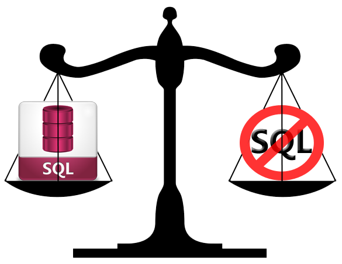

return jeffKeslin
to SQL or not to SQL

If you search the internet to find the answer to the question of whether or not to use SQL or NoSQL databases, you'll find that there are some very strong opinions on both sides. There are clearly some advantages to using either one, but let's start with some historical context.
Relational databases first started appearing in the 1970's and early versions of the SQL language were developed around that time. Since then, it's been the gold standard for creating and accessing databases. The push for a new system of working with databases actually comes from issues that Google and Amazon had when dealing with huge amounts of data that were unheard of before in the web landscape. Because of this issue of scale, they began working on creating systems for non-relational databases that they believed would be faster and easier to access.
Point of clarification: When people argue SQL or NoSQL, what they're really saying is "relational vs. non-relational." Relational databases include: Oracle, MySQL, and SQL Server, among others. And non-relational databases include MongoDB, CouchDB, Big Table (created by Google), and others.
So what are the arguments for both sides? Advocates for NoSQL claim that JOINS in a relational database is too slow for a large system, and that it doesn't map well with certain data types or heirarcial data. Advocates for SQL would claim that unless you're as big as Google or Twitter, relational databases have no speed issues, and that today's tools like, Oracle, can handle just about any data type.
The moral of the story: If you search hard enough you'll find that level-headed programmers actually believe that both SQL and NoSQL databases are useful and wonderful in their own right. What matters is the project you're working on and what makes more sense for that particular project. A skilled programmer will be comfortable with either, and have the wisdom to know which system is appropriate for their project.
Oh, and happy coding!